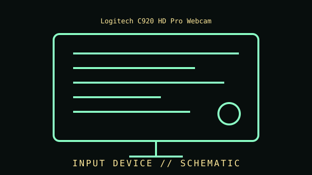

[ INPUT DEVICES // IDENTIFIED COMPONENT ]
Logitech C920 HD Pro Webcam
Autofocus webcam used for video capture and conferencing; individual revisions and included software vary. USB webcam, C920 family, launched 2012.

IDENTIFICATION WARNING: Confirm the exact model, SKU, revision, interface, and driver support from the unit label and manufacturer documentation. Product-family names can cover materially different revisions.
Part specifications
| Catalog subcategory | Imaging and audio-capture peripherals |
|---|---|
| Catalog identity | Logitech C920 HD Pro Webcam |
| Generation / family | USB webcam, C920 family, launched 2012. |
| Video modes | Up to 1920 × 1080 at 30 frames per second; supported modes depend on the host, application, and driver. |
| Lens and field of view | Glass lens with autofocus; nominal 78° diagonal field of view. |
| Audio | Dual built-in stereo microphones; verify the particular revision and regional SKU. |
| Connection | USB 2.0 Type-A host connection; advertised H.264 encoding support is software/host dependent. |
| Identification | C920 product family, commonly sold as 960-000764; related C920 revisions may differ in hardware or bundled software. |
Compatibility, care & service
- Confirm host connector, device protocol, operating-system support, driver availability, and required software before installation.
- Check the nameplate, product number, firmware, included cable, stand or film holder, and physical condition; preserve accessories with the device.
- For scanners and cameras, test image capture with a known target and record application, resolution, color mode, and profile. For microphones, document distance, gain, pattern, and recording chain.
- Do not use aggressive cleaners on optics, scanner glass coatings, capsule ports, or connector finishes; follow the manufacturer's care instructions.
Model-specific notes
Video resolution is not a guarantee of frame rate or image quality in every application. Check the exact label and revision, USB bandwidth, operating-system driver support, privacy shutter/accessory status, and microphone selection in the host system.
Sources & further reading
- Logitech — C920 HD Pro Webcam specificationsManufacturer product reference; check the exact SKU and regional revision against the specimen.
- Logitech Support — C920 setup and documentationManufacturer support/documentation reference for setup, compatibility, or manuals.
Source claims should be checked against the full model number. An advertised maximum is not a guarantee of performance on every host or in every application.